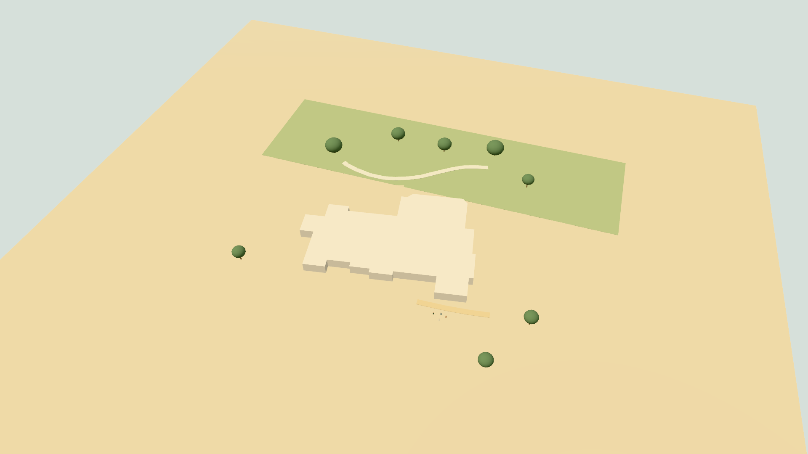

Build a GIS-grounded scene by hand
No model, prompt, speech recognition or generated code is required. Build the site with deterministic JavaScript, and inspect the evidence at every step.
Reconstruct the FutureFlux site at Red Mountain Multigenerational Center in Mesa, Arizona, using the JS Shell. The numbered steps below are complete, sequential snippets for the human-operated Shell, not requests to an AI. AI assistance and the original speech demo are separate, optional extensions at the end.
Open the cinematic, pinned scene · Browse the matching implementation
The embed is the actual pinned Strata project, not a video. Orbit and inspect its scene tree, or use the full-size link above. It opens in authoring mode with timeline autoplay off; do not load a model or run the project's optional interaction script for the no-AI walkthrough. Use a separate, empty editor tab to build your own copy.

1. Load and inspect the source records
The project saved GeoJSON extracts from the City of Mesa REST catalogue. The query envelope was -111.6692,33.4305,-111.6653,33.433, using spatial intersection with input and output spatial reference 4326.
| Source layer | Selected record | Project use |
|---|---|---|
| Parks/ParkFinder/MapServer/19 | 30121 / PKPTH2837 | center-walk: walkway by the community center |
| Same paths layer | 30046 / PKPTH2771 | park-loop: walkway along the park loop |
| OpenData/CommunityMaps/MapServer/6 | 53258 | Building footprint |
| Parks/ParkFinder/MapServer/16 | geodb_oid 1 | Community-center location and identity |
The extracts are in demo/data/; other paths in the envelope were deliberately omitted. The City's data terms apply. An empty copyright field in a REST response is not a public-domain licence. Record source, licence, attribution and modifications, as this project does in the updated PROVENANCE.md permission audit.
The raw-data blocks retain the earlier immutable extract pin below; those GeoJSON bytes are unchanged in the cinematic revision.
there are no restrictions on copying, publishing, distributing, modifying or using the data for a commercial or non-commercial use.§3(f) requires listing the City as the source on products using the data or derivative work, including exported stills and footage. For the footprint, retain the layer credit: City of Mesa, Information Technology Department, Enterprise GIS. Additional source conditions also apply (§3(b)); §4 supplies the data as-is and disclaims accuracy, completeness and fitness. Read the full agreement, including its liability and indemnity terms. An accessible REST endpoint or an empty copyright field is not a licence, and fetching at generation time would not remove these obligations.
This first block downloads only pinned public GeoJSON, not executable project code. A named object on window retains state between Shell runs. The empty-scene guard prevents accidentally adding this tutorial to your other work.
(async () => {
if (editor.scene.children.length || window.mesaTutorial) {
throw new Error('Use an empty scene and a fresh tab before step 1.');
}
const base = 'https://raw.githubusercontent.com/tejaswigowda/test1/'
+ '7859f88a593617c16cccd96dddc5f905850a6f59/demo/data/';
const read = async name => {
const response = await fetch(base + name);
if (!response.ok) throw new Error(name + ': HTTP ' + response.status);
return response.json();
};
const [paths, buildings] = await Promise.all([
read('mesa-paths.geojson'), read('mesa-buildings.geojson')
]);
const check = (condition, message) => {
if (!condition) throw new Error(message);
};
const selected = [
{ objectid: 30121, id: 'center-walk',
label: 'Walkway by the community center', color: '#d2bc8e' },
{ objectid: 30046, id: 'park-loop',
label: 'Walkway along the park loop', color: '#dcd6c1' }
];
for (const spec of selected) {
const feature = paths.features.find(f => f.id === spec.objectid);
check(feature?.geometry.type === 'LineString', 'Missing ' + spec.id);
}
const footprint = buildings.features.find(f => f.id === 53258);
check(footprint?.geometry.type === 'Polygon', 'Missing footprint 53258');
window.mesaTutorial = { paths, footprint, selected, check };
return selected.map(spec => {
const f = paths.features.find(f => f.id === spec.objectid);
return { id: spec.id, source: f.id, facility: f.properties.FACILITYID,
points: f.geometry.coordinates.length };
});
})()Human check: inspect the returned records: center-walk is source 30121 / PKPTH2837 with 5 points; park-loop is 30046 / PKPTH2771 with 13. Compare the saved coordinates and IDs with the linked source layers. If the download fails, stop and inspect the error; do not substitute invented paths.
2. Project the site into local metres
Longitude and latitude are not scene distances. Use the fixed origin below, with x east, y up and z south. This small-site approximation is for representative massing, not surveying. THREE and the editor command classes are already available in the JS Shell.
(() => {
const m = window.mesaTutorial;
m.origin = [-111.667328704, 33.431791272];
m.project = ([lon, lat], y = 0) => [
(lon - m.origin[0]) * 111320 * Math.cos(m.origin[1] * Math.PI / 180),
y, -(lat - m.origin[1]) * 111320
];
m.check(m.project(m.origin).every(v => v === 0), 'Origin must be zero');
const first = m.paths.features.find(f => f.id === 30121)
.geometry.coordinates[0];
const local = m.project(first, 0.12);
m.check(Math.abs(local[0] - 63.8344484391) < 0.000001, 'Check x');
m.check(Math.abs(local[2] - 31.0489561484) < 0.000001, 'Check z');
return { origin: m.project(m.origin), firstPathPointMetres: local };
})()Human check: the origin becomes [0,0,0]. The first center-walk point is approximately [63.834448,0.12,31.048956] metres. Check the signs: east is positive x; south is positive z. All later meshes use this same conversion.
3. Build the ground and footprint
Set up a mesh helper and an undoable add helper. For a cinematic but reproducible finish, generate small, seeded grain textures in memory. Paving also has authored expansion joints. These are original procedural pixels, not downloaded photographs or AI-generated textures; the seed determines every pixel.
The footprint uses (x,-z) in its 2D shape. Rotating the mesh by -90 degrees around x makes its assumed 6 m extrusion vertical and preserves the orientation on reload.
(() => {
const m = window.mesaTutorial;
m.makeSurface = (name, color, repeat, seed, bumpScale, joints = false) => {
const size = 64, data = new Uint8Array(size * size * 4);
let state = seed;
for (let y = 0; y < size; y++) {
for (let x = 0; x < size; x++) {
state = (Math.imul(state, 1664525) + 1013904223) >>> 0;
const grain = state / 4294967296;
const value = joints && (x < 1 || y < 2)
? 155 : Math.round(224 + (grain - 0.5) * 34);
const i = (y * size + x) * 4;
data[i] = data[i + 1] = data[i + 2] = value;
data[i + 3] = 255;
}
}
const map = new THREE.DataTexture(data, size, size, THREE.RGBAFormat);
map.name = name + ' / seeded grain';
map.colorSpace = THREE.SRGBColorSpace;
map.wrapS = map.wrapT = THREE.RepeatWrapping;
map.repeat.set(...repeat);
map.magFilter = THREE.LinearFilter;
map.minFilter = THREE.LinearMipmapLinearFilter;
map.generateMipmaps = true;
map.anisotropy = 4;
map.needsUpdate = true;
return new THREE.MeshStandardMaterial({
name, color, map, bumpMap: map, bumpScale, roughness: 0.9, metalness: 0
});
};
m.sand = m.makeSurface('Procedural desert gravel',
'#cfbda2', [36,36], 11, 0.12);
m.planting = m.makeSurface('Procedural planted ground',
'#7b895b', [24,7], 23, 0.08);
m.roof = m.makeSurface('Procedural mineral roof',
'#ddd4c4', [0.22,0.22], 37, 0.04);
m.stucco = m.makeSurface('Procedural warm stucco',
'#eee4d0', [0.75,0.75], 41, 0.055);
m.foliage = m.makeSurface('Procedural foliage',
'#56784d', [3,2], 53, 0.18);
m.paving = m.makeSurface('Procedural jointed paving',
'#e1d7c3', [1,1], 67, 0.025, true);
m.mesh = (name, geometry, finish, position) => {
const material = typeof finish === 'string'
? new THREE.MeshStandardMaterial({ color: finish, roughness: 0.94 })
: finish;
const object = new THREE.Mesh(geometry, material);
object.name = name;
object.position.set(...position);
object.castShadow = object.receiveShadow = true;
return object;
};
m.add = objects => {
for (const object of objects) editor.execute(new AddObjectCommand(editor, object));
};
const ground = m.mesh('Representative desert ground',
new THREE.BoxGeometry(430, 1, 420), m.sand, [0, -0.6, -10]);
const planted = m.mesh('Representative planted zone',
new THREE.BoxGeometry(240, 0.1, 70), m.planting, [5, -0.03, -85]);
const shape = new THREE.Shape(m.footprint.geometry.coordinates[0].map(p => {
const [x, , z] = m.project(p);
return new THREE.Vector2(x, -z);
}));
m.building = m.mesh('Community center / assumed 6m height',
new THREE.ExtrudeGeometry(shape, { depth: 6, bevelEnabled: false }),
[m.roof, m.stucco], [0, 0.05, 0]);
m.building.rotation.x = -Math.PI / 2;
m.building.userData = { source: 'City of Mesa building OBJECTID 53258',
modifications: 'Assumed 6m height; not surveyed.' };
m.add([ground, planted, m.building]);
const size = new THREE.Box3().setFromObject(m.building)
.getSize(new THREE.Vector3());
m.check(Math.abs(size.y - 6) < 0.00001, 'Building must be 6m high');
return { buildingSizeMetres: size.toArray() };
})()Human check: the building is approximately 109.131 × 6 × 79.330 m in x/y/z, not an 80 m tall wall. Its extrusion material groups use mineral roofing for caps and stucco for walls. Inspect its rotation and materials in the Scene tree. Every texture is 64 × 64 RGBA pixels; repeating seed 11 produces identical gravel. Bump mapping changes shading, not surveyed geometry. Each object or path group is an undoable addition; undo all additions from a block before rerunning it.
4. Turn the two centerlines into walkways
Make one named group per source path. Each pair of points becomes a box, positioned at its midpoint and rotated along its direction. Width 3.3 m and thickness 0.18 m are assumptions. These boxes approximate a buffered centerline, not a surveyed paving polygon.
(() => {
const m = window.mesaTutorial;
m.pathGroups = m.selected.map(spec => {
const feature = m.paths.features.find(f => f.id === spec.objectid);
const points = feature.geometry.coordinates.map(p => m.project(p, 0.12));
const group = new THREE.Group();
group.name = spec.label;
group.userData.fluxPath = { id: spec.id, label: spec.label, points,
source: 'Mesa OBJECTID ' + spec.objectid + ' / ' + feature.properties.FACILITYID };
for (let i = 1; i < points.length; i++) {
const a = new THREE.Vector3(...points[i - 1]);
const b = new THREE.Vector3(...points[i]);
const surface = m.paving.clone();
surface.map = m.paving.map.clone();
surface.map.repeat.set(1, a.distanceTo(b) / 3.3);
surface.map.needsUpdate = true;
surface.bumpMap = surface.map;
const segment = m.mesh(spec.id + ' / ' + i,
new THREE.BoxGeometry(3.3, 0.18, a.distanceTo(b) + 0.1),
surface, a.clone().add(b).multiplyScalar(0.5).toArray());
segment.rotation.y = Math.atan2(b.x - a.x, b.z - a.z);
group.add(segment);
}
return group;
});
m.add(m.pathGroups);
m.check(m.pathGroups[0].children.length === 4, 'Expected 4 center segments');
m.check(m.pathGroups[1].children.length === 12, 'Expected 12 park segments');
return m.pathGroups.map(g => ({ id: g.userData.fluxPath.id,
segments: g.children.length,
firstMidpoint: g.children[0].position.toArray() }));
})()Human check: expand both groups in the Scene tree: there are 4 and 12 segments. The first midpoints are approximately [58.150234,0.12,31.923832] and [33.105119,0.12,-84.984967]. Compare these with the average of each source's first two projected points. The community-center path is south of the footprint; the curved park path is north of it. Paving repeats are scaled by each segment's length, rather than stretching one joint pattern over every segment. Joint positions are illustrative, not GIS attributes.
5. Add representative trees and people
These are explicitly authored placements, not a tree inventory or observations of real people. The dimensions and positions below reproduce the original scene's context.
(() => {
const m = window.mesaTutorial;
const objects = [];
for (const [x, z, radius] of [
[-68,-68,6], [-30,-94,5], [4,-93,5], [38,-100,6],
[65,-75,4], [85,30,4], [-82,38,4], [68,62,4]
]) {
objects.push(m.mesh('Arranged tree trunk / not surveyed',
new THREE.CylinderGeometry(0.25, 0.4, 4, 8), '#8a7554', [x,2,z]));
const crown = m.mesh('Arranged tree crown',
new THREE.SphereGeometry(radius, 14, 9), m.foliage, [x,6.8,z]);
crown.scale.y = 0.8;
objects.push(crown);
}
for (const [x, z, color] of [
[39,39,'#305d70'], [42,40,'#b77f50'],
[39,43,'#f1ead6'], [35,40,'#536d54']
]) {
objects.push(m.mesh('Arranged participant',
new THREE.CapsuleGeometry(0.28, 1.05, 4, 8), color, [x,0.95,z]));
objects.push(m.mesh('Participant head',
new THREE.SphereGeometry(0.24, 10, 8), '#bf9979', [x,1.85,z]));
}
m.add(objects);
m.check(objects.length === 24, 'Expected 16 tree and 8 participant meshes');
return { trees: 8, participants: 4, contextMeshes: objects.length };
})()Human check: count eight crowns and four people, orbiting or zooming as needed. People should sit near the southern path, not at the scene origin. Trees are several metres high, while people are about two metres high.
6. Light and frame the site
Use a warm low-angle key to reveal massing, cool sky and edge fill to retain detail in the shade, and ACES tone mapping to roll off highlights. Disable the editor's default environment fill so it does not wash out the authored contrast. Only the key casts a shadow; the fill does not create distracting second shadows. The 2048-pixel PCF shadow map uses a radius of 3 for softened edges. None of this is a measured time of day.
(() => {
const m = window.mesaTutorial;
const sky = new THREE.HemisphereLight('#bfd9ed', '#9d7954', 0.9);
sky.name = 'Cool sky / warm ground bounce';
const sun = new THREE.DirectionalLight('#ffe0b0', 4.6);
sun.name = 'Illustrative golden-hour key / not a dated solar study';
sun.position.set(-95, 55, 60);
sun.castShadow = true;
sun.shadow.mapSize.set(2048, 2048);
Object.assign(sun.shadow.camera,
{ left: -160, right: 160, top: 160, bottom: -160, near: 1, far: 400 });
sun.shadow.bias = -0.00015;
sun.shadow.normalBias = 0.08;
sun.shadow.radius = 3;
const rim = new THREE.DirectionalLight('#b5cce6', 0.65);
rim.name = 'Cool edge fill / illustrative';
rim.position.set(90, 60, -100);
m.add([sky, sun, rim]);
editor.signals.sceneEnvironmentChanged.dispatch('None');
editor.scene.name = 'Mesa walkways / human-built representative scene';
editor.scene.background = new THREE.Color('#afc3d0');
editor.scene.fog = new THREE.Fog('#afc3d0', 390, 900);
editor.backgroundType = 'Color';
editor.scene.userData.provenance = {
source: 'City of Mesa GIS: paths 30121/30046, building 53258',
licence: 'City of Mesa Data Terms of Use License Agreement',
attribution: 'City of Mesa GIS / representative reconstruction',
modifications: 'Local metres; assumed widths and height; arranged context, '
+ 'seeded procedural finishes and illustrative golden-hour lighting.'
};
editor.config.setKey(
'project/renderer/shadows', true,
'project/renderer/shadowType', THREE.PCFShadowMap,
'project/renderer/toneMapping', THREE.ACESFilmicToneMapping,
'project/renderer/toneMappingExposure', 0.95
);
editor.camera.position.set(130, 115, 160);
editor.camera.fov = 43;
editor.camera.near = 0.1;
editor.camera.far = 2000;
editor.controls.center.set(0, 0, -16);
editor.camera.lookAt(editor.controls.center);
editor.camera.updateProjectionMatrix();
editor.camera.updateMatrixWorld();
editor.scene.updateMatrixWorld(true);
editor.deselect();
editor.signals.sceneGraphChanged.dispatch();
editor.signals.cameraChanged.dispatch(editor.camera);
return { camera: editor.camera.position.toArray(),
center: editor.controls.center.toArray(),
objects: editor.scene.children.length };
})()Human check: there are 32 top-level objects, two distinct paths, a horizontal building, eight trees and four people. Camera position is [130,115,160] and orbit center is [0,0,-16]. Choose as render in the viewport's shading menu to preview the export settings. Look for warm lit faces, cooler shaded faces, visible ground contact and softened tree/building shadows, without a clipped-white roof.
editor.config.setKey pairs above (not the whole construction block), then choose as render.7. Verify the saved scene and capture it
Verify the serialized result, not just the working viewport. This block exports to memory and reloads a separate copy for inspection; it does not replace the live scene or run scripts.
(() => {
const m = window.mesaTutorial;
editor.scene.updateMatrixWorld(true);
editor.camera.updateMatrixWorld();
const json = editor.toJSON();
m.check(Object.keys(json.scripts).length === 0, 'No scripts should be installed');
const copy = new THREE.ObjectLoader().parse(json.scene);
copy.updateMatrixWorld(true);
const groups = copy.children.filter(o => o.userData.fluxPath);
m.check(groups.length === 2, 'Expected two reloaded paths');
for (const group of groups) {
const points = group.userData.fluxPath.points.map(p => new THREE.Vector3(...p));
m.check(group.children.length === points.length - 1, 'Segment count changed');
group.children.forEach((segment, i) => {
const middle = points[i].clone().add(points[i + 1]).multiplyScalar(0.5);
const position = segment.getWorldPosition(new THREE.Vector3());
m.check(position.distanceTo(middle) < 0.000001, 'Lost path position');
const direction = points[i + 1].clone().sub(points[i]).normalize();
const axis = new THREE.Vector3(0,0,1).transformDirection(segment.matrixWorld);
m.check(axis.dot(direction) > 0.999999, 'Lost path rotation');
});
}
const building = copy.getObjectByName('Community center / assumed 6m height');
const size = new THREE.Box3().setFromObject(building).getSize(new THREE.Vector3());
m.check(Math.abs(size.y - 6) < 0.00001, 'Lost building orientation');
m.check(json.controls.center.every((v, i) => v === [0,0,-16][i]),
'Camera center changed; reset editor.controls.center to [0,0,-16]');
m.check(json.scene.images.length === 6, 'Expected six embedded grain images');
m.check(json.environmentType === 'None' && copy.environment === null,
'Disable the default environment fill to retain the authored contrast');
m.check(json.scene.images.every(image =>
typeof image.url === 'object' && image.url.data.length === 64 * 64 * 4),
'Textures must be embedded RGBA pixels, not remote URLs');
m.check(json.project.shadows === true
&& json.project.toneMapping === THREE.ACESFilmicToneMapping
&& json.project.toneMappingExposure === 0.95,
'Check export shadows, tone mapping and exposure');
return { verified: true, paths: groups.length, buildingHeight: size.y,
embeddedImages: json.scene.images.length,
scripts: Object.keys(json.scripts).length };
})()ExtrudeGeometry itself also failed to survive its parameter-based JSON reconstruction, leaving the building upright. Updating scene matrices and rotating the building mesh fixes both. Strata's saved orbit pivot is controls.center, not controls.target.Human check: expect verified: true, 2 paths, building height approximately 6, 6 embedded images and 0 scripts. Save with Strata's Save control. Reopen the JSON in a separate editor tab, reapply the render preferences as explained above and repeat the visual checks: separated paths, a horizontal textured building, distributed trees and no interaction panel. Export a Render → Snapshot still at an explicit size. Compare it with a second snapshot with shadows disabled: contact shadows must disappear. Restore shadows afterward. Texture pixels travel inside the saved JSON, so there is no remote texture service to trust.
This completes the scene with zero AI inference, speech synthesis or transcription. The code constructs geometry from inspected records and explicit numbers. No model chooses coordinates, invents a footprint, or decides whether verification passed.
The seven blocks were tested through the actual hosted Strata Shell in a fresh browser session: 32 top-level objects, two reloaded paths, a 6 m building, six embedded texture images with preserved pixels, zero scene scripts and no model loaded. The screenshot uses Strata's actual 1920 × 1080 Snapshot export; a paired shadow-on/off render confirmed visible shadows. These checks complement, rather than replace, your own visual inspection.
Optional: use AI assistance without giving up verification
An assistant can explain the projection, suggest a material, help find a record, or draft a code change. None of that is required above. Treat its output as a proposal to inspect, not evidence that the scene is correct.
| AI may help with | The human-verifiable acceptance check |
|---|---|
| Find a source record | Open the original layer; verify ID, geometry type, coordinates and reuse terms against the pinned extract. |
| Explain or change the projection | Recalculate the origin and first test point in step 2; retain axes and metre units. |
| Draft geometry or layout changes | Read the code before running it; inspect dimensions, source IDs, segment counts and the reloaded saved file. Label new assumptions. |
| Suggest textures or a light rig | Inspect the seeded pixel recipe, material assignments and light values. Compare actual shadow-on/off exports, check reload preservation and label the finishes and lighting as illustrative. |
| Automate repetitive editor actions | Review the proposed steps, watch them happen, inspect the scene tree and check undo. Do not equate automation with correctness. |
| Interpret a shade request | Show candidate IDs and raw model output; validate the proposed operation and target before applying it. A refusal must be visible, not staged. |
| Transcribe speech | Listen to the actual audio, compare its actual transcript and report errors. Do not silently correct a transcript to make a demonstration pass. |
Help me review this human-built Mesa scene; do not build it for me.
Use the source records and checks in this tutorial as acceptance criteria.
Explain any proposed change and its evidence before I approve it.
Do not invent source IDs, geometry, units, licences or successful checks.
Do not run a model or speech tool unless I explicitly request that extension.
For each change, show what I can inspect and how to undo it.
Stop on a failed check; never replace it with a success-shaped fallback.The original project also has an optional, model-driven shade demo. That is an extension, not how the base scene must be built. It includes speech and an operation host; its additional tools are credited below.
Optional extension: the original AI and speech interaction, with its checks and limitations
A. Give the model a closed vocabulary
The host in ops.mjs enumerates tagged paths that are not hidden by their own or ancestor visibility and whose bounding boxes intersect the camera frustum. This is a frustum test, not an occlusion test. The panel shows the same candidates supplied to the model.
shade.add(path, kind) kind: canopy | sail | trees
shade.width(value) 1 to 12 metres
shade.height(value) 2.2 to 8 metres
shade.material(id) canvas-sand | canvas-teal | timber
shade.remove(id)
view.focus(id)
view.orbit(value) -180 to 180 degrees
heat.show(layer)
heat.hide()This is the documented vocabulary, not JavaScript to paste into the Shell. Model responses are JSON, for example {"op":"shade.add","path":"center-walk","kind":"canopy"}. The host rejects unknown operations, extra arguments, invalid values and unavailable targets. See the complete operation and refusal reference.
The crucial exchange is real:
What if we shaded this walkway?
leaves two candidates.- The real model runs. The host refuses
ambiguous-pathif the target remains unresolved, even if the model guesses an ID. - Both paths are highlighted and the reason is displayed.
The one by the community center.
triggers another model request and uniquely grounds the target.- A valid operation creates the canopy on
center-walk.
The host is deliberately conservative; the model does not invent a path or arbitrary geometry. A test with a stubbed model is useful for the host, but is not evidence that real inference or speech transcription worked.
B. Connect the project panel to the editor
panel.mjs mounts an HTML overlay with the candidate list, transcript textarea, submit button, model output and elapsed inference time. It calls host.hear() with Strata's existing editor.aiEngine.complete(). It displays a named failure if no model is loaded.
install.mjs applies the scene's saved render preferences and connects the host to editor.scene and editor.camera. It imports Strata's existing AddObjectCommand, RemoveObjectCommand and MultiCmdsCommand so proposal changes participate in editor undo. It exposes the host as window.flux for automation. The runner selects WebGL before loading the scene, then as render for a matching viewport.
The saved scene also embeds the host and panel in a scene lifecycle script for player execution. Opening the authoring scene link alone does not install its editor integration or a microphone pipeline. The rehearsal runner explicitly installs the authoring version into the browser session.
In run.mjs, preparation loads the scene, reads the three project modules locally, removes their module wrappers and evaluates the combined code in the controlled Strata tab. This is the actual Node/Playwright pattern, not a browser-console command:
// Excerpt: dir is the local demo directory; editor is a Playwright Page.
await editor.locator('select').filter({
has: editor.locator('option[value="WebGLRenderer"]')
}).selectOption('WebGLRenderer', { force: true });
await editor.waitForFunction(() =>
window.editor.config.getKey('project/renderer/type') === 'WebGLRenderer');
await editor.evaluate( async json => {
window.disposeFlux?.();
window.editor.clear();
await window.editor.fromJSON( json );
}, json );
const sources = await Promise.all(
[ 'ops.mjs', 'panel.mjs', 'install.mjs' ].map(
name => readFile( path.join( dir, name ), 'utf8' )
)
);
const code = sources.map( source => source
.replace( /^import .*;$/gm, '' )
.replace( /^export /gm, '' )
).join( '\n' );
await editor.evaluate( async code => new Function(
code + '\nreturn installFlux(window.editor,window.THREE);'
)(), code );
await editor.locator('select[title^="as render:"]').selectOption('render');This small wrapper relies on these particular modules' layout; it is not a general JavaScript bundler. Only evaluate the reviewed, pinned project code. Clearing the demo scene avoids appending duplicate paths on reruns; save unrelated work first and do not accept a recovery prompt that restores an older scene.
C. Bridge speech through browser automation
Dub tab: SRT -> actual synthetic WAV
Whisper tab: WAV -> actual ASR transcript
Playwright: delayed typing into the Strata panel
Strata AI: transcript + candidates + schema -> proposed operation
Project host: validation -> refusal or undoable geometry editThese are three browser tabs, not a hidden Whisper call inside the scene. The runner uploads audio to Whisper, waits for transcription to finish and reads window.app.currentTranscript. It then types that actual text into the panel at 65 ms per character. It does not replace ASR output with the SRT text. This app-facing interface may change; inspect the current app before adapting it.
The two English SRT inputs say What if we shaded this walkway?
and The one by the community center.
Dub generated their audio using Kokoro's af_heart voice. Cached audio is reused only when the current SRT hash and WAV hash match its report. The synthetic-speech disclosure stays visible.
The existing standalone runner opens its own headed Chromium with editor, Dub and Whisper tabs. From the project demo directory, with its dependencies and Chrome already available:
FLUX_BROWSER_CHANNEL=chrome node run.mjs --beat english --rehearseThat is not the same as driving VS Code's shared integrated browser. If you want to record VS Code itself, ask Copilot to reuse the shared tabs and project implementation instead of launching this runner.
D. Record the English interaction
Share the Strata, Whisper and Dub browser tabs with Copilot, save unrelated editor work, then use this prompt. The agent should prepare first and wait while you start your own screen recorder.
Drive the FutureFlux English demo using Playwright/browser tools in
VS Code's existing shared integrated browser. I record VS Code myself.
Do not build, install packages, edit files, commit, push, or change
strata-editor. Do not launch the standalone run.mjs browser.
Use the pinned scene:
https://strataeditor.dev/#repo=tejaswigowda/test1&file=flux.json&commit=7b9359e3b2226064e9852cbce5d2c721175957a1&play=false
Read and reuse this project's ops.mjs, panel.mjs and install.mjs:
https://github.com/tejaswigowda/test1/tree/7b9359e3b2226064e9852cbce5d2c721175957a1/demo
Before recording:
- Save unrelated work; load exactly one copy of the corrected scene.
- Install the existing authoring panel in this browser session only.
- Load Strata's real model. Verify exactly two candidate paths.
- Arrange the viewport and panel so paths and complete status are visible.
- Inspect Whisper's current automation interface and use it if available.
- Prepare actual Dub audio for "What if we shaded this walkway?" and
"The one by the community center." Disclose synthetic speech.
- Say "Ready to record" and wait for "Go".
On Go:
1. Transcribe the first actual WAV through Whisper.
2. Switch to Strata and type the actual transcript at 65 ms/character.
Never fill() or assign the textarea value.
3. Submit to the real model. Verify a genuine ambiguous-path refusal.
4. Keep both paths highlighted and its full reason visible for 3.5 seconds.
5. Transcribe the clarification WAV through Whisper.
6. Type that actual transcript and submit another real model request.
7. Verify a canopy is created on center-walk; leave it visible 5 seconds.
Keep cursor movement and tab switches visible; preserve real latency.
No corrected transcripts, mock responses, forced success, or direct
canopy insertion. Show any real failure and stop. English only; no heat.
If the shared browser cannot access a required audio file or automation
interface, report the blocker rather than silently switching browsers.
This is manual VS Code capture, not an OBS/1920x1080 acceptance claim.Do not tighten the take by speeding up inference or deleting the clarification delay. Earlier English rehearsals took about 49 seconds, not the aspirational fifteen. Recording a prepared clip through ASR is also not a live microphone demonstration.
E. Keep the limitations visible
- English: genuine Dub-to-Whisper-to-model rehearsals passed. Their archived reports predate the scene export fix, so they prove speech and operations, not the old scene's visual correctness. The current cinematic export passed seven tests and real hosted-browser geometry, texture and shadow checks; speech was not rerun for this appearance revision.
- Spanish: two real ASR attempts failed on the clarification. No transcript was corrected and no mistranscription alias was added. Spanish end-to-end remains blocked, and synthetic speech does not satisfy the original human-speech requirement.
- Heat: disabled, with
no-heat-layer. The investigated ASU source describes 2021 MODIS land-surface-temperature percentile ranks, not air temperature or degrees. Its package reuse licence was not verified, so no layer is redistributed or simulated. - Capture: no finished OBS footage was produced. Manually recording VS Code is a separate workflow; it does not establish the work order's OBS/headed-Chromium/1920x1080 gate.
- Scope: one operator, no multiplayer, no headset capture and no quantified cooling claim.
Keep the project's live/staged notes, updated provenance and permission audit and validation evidence with the footage. The valuable demonstration is not that an AI always acts: it is that the system can show its choices, refuse an unresolved instruction, and act after a real clarification.
Credits and licences
People
- Tejaswi Gowda (script, scene)
Assets
- City of Mesa GIS paths, building footprint and center location: City of Mesa GIS. Extracted 2026-11-16; projected to local metres, paths given assumed widths, footprint given an assumed height. Licence: City of Mesa Data Terms of Use License Agreement; see the linked provenance.
Tools
- Three.js (MIT)
- Playwright (Apache-2.0)
- dub.webcli.app (GPL-3.0) Separate browser app, not bundled with Strata. Test speech is synthetic.
- Kokoro (Apache-2.0)
- whisper.webcli.app (not stated in the demo provenance; consult the app before redistributing its code) Separate transcription app; its code is not copied into this tutorial.
- Qwen2.5-Coder-1.5B-Instruct (Apache-2.0) The English rehearsal used Strata's Qwen2.5-Coder-1.5B-Instruct-q4f32_1-MLC model.